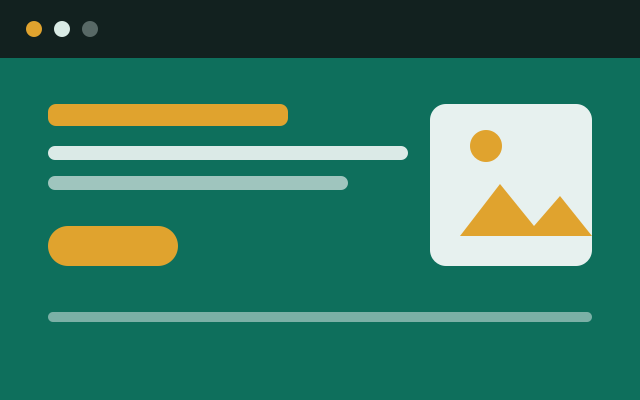

Dự án
Ba bài tập lớn tôi đã hoàn thành. Mỗi dự án đều viết bằng HTML và CSS thuần, không dùng thư viện ngoài.

Website quán cà phê
Trang giới thiệu một quán cà phê nhỏ gồm bốn phần: câu chuyện của quán, thực đơn, hình ảnh không gian và thông tin đường đi.
Điều tôi học được nhiều nhất là cách dùng CSS Grid để xếp thực đơn thành nhiều cột mà vẫn gọn gàng khi thu nhỏ màn hình.
- HTML5
- CSS Grid
- Responsive

Blog ghi chép học tập
Nơi tôi lưu các bài viết ngắn về những thứ vừa học: thẻ ngữ nghĩa trong HTML, cách canh lề bằng Flexbox, mẹo đặt tên lớp CSS.
Bố cục hai cột với mục lục cố định bên trái, trên điện thoại mục lục chuyển xuống đầu trang.
- Flexbox
- Typography
- Media query

Trang tra cứu điểm
Bài tập về bảng dữ liệu: trình bày bảng điểm của một lớp sao cho vẫn đọc được trên màn hình hẹp, có tiêu đề cột cố định và màu nền xen kẽ.
Qua dự án này tôi hiểu rõ hơn vai trò của các thẻ thead, tbody và thuộc tính scope đối với người dùng trình đọc màn hình.
- Bảng dữ liệu
- Khả năng truy cập
- CSS3
Nguồn tài liệu tham khảo
- Tài liệu HTML và CSS MDN Web Docs - developer.mozilla.org
- Hướng dẫn xuất bản trang tĩnh GitHub Pages - pages.github.com
- Phông chữ Be Vietnam Pro và Bricolage Grotesque từ Google Fonts (giấy phép SIL Open Font License)
- Hình ảnh Toàn bộ hình minh họa trong website do tác giả tự vẽ bằng SVG